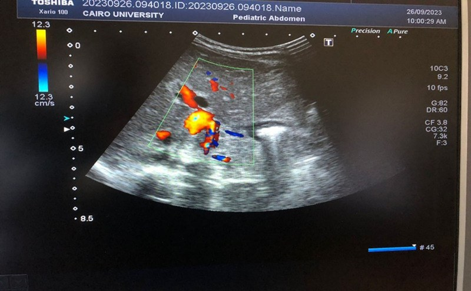
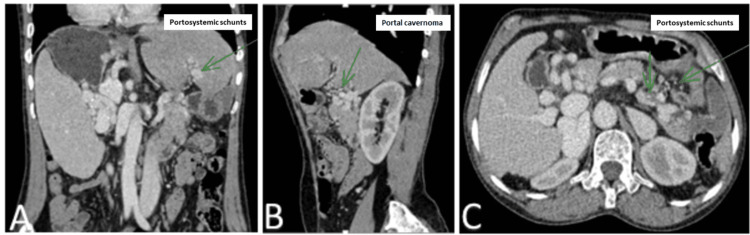
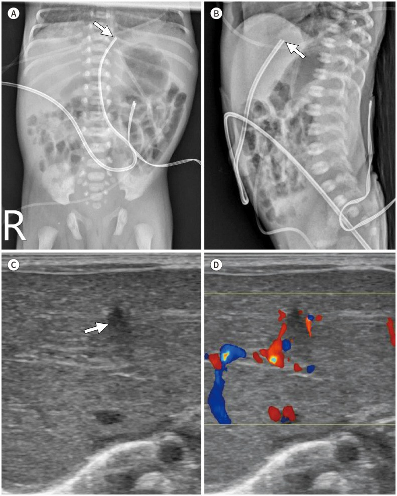
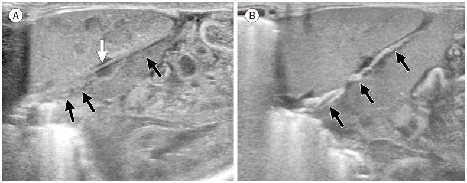
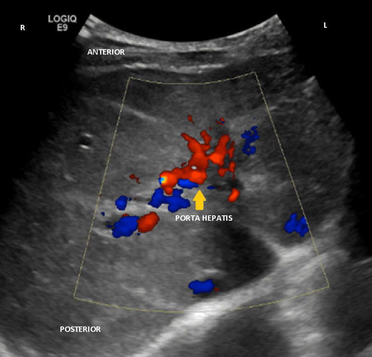

6114 — Di chứng muộn của huyết khối tĩnh mạch cửa sau catheter rốn: portal cavernoma, tăng áp cửa và khi nào cần nối cửa–chủ
Tags: pattern:cavernoma pattern:tang-ap-cua pattern:lach-to pattern:gian-tinh-mach-thuc-quan pattern:cham-tang-truong vung:gan vung:lach protocol:sieu-am-Doppler protocol:CT-tinh-mach-cua protocol:MRCP
Mức chắc chắn (certainty): tổng hợp y văn (literature synthesis) — ghép ca trẻ 5 tuổi nôn máu do cavernoma sau catheter rốn có CT 3 bình diện (Cureus 2024, PMC11367683), ca trẻ 7 tuổi cavernoma có Doppler và nội soi (Cureus 2025, PMC11930788), ca sơ sinh non tháng có UVC sai vị trí → huyết khối tĩnh mạch cửa (J Korean Soc Radiol 2023, PMC10265250), ca 3 tháng tuổi cavernoma sau UVC (Medicine 2025, PMC11789905), đoàn hệ toàn quốc 62 bệnh nhân EHPVO theo dõi tới 18,8 tuổi (Liver Int 2026, PMC12968599), loạt 6 trẻ mổ shunt (5 Meso-Rex) (J Clin Med 2025, PMC12608255), so sánh 43 trẻ Meso-Rex bypass vs transposition (Front Pediatr 2022, PMC9490082), khuyến cáo APSPGHAN 2026 về chích xơ/banding (Pediatr Gastroenterol Hepatol Nutr 2026, PMC12816376), tổng quan portal cavernoma cholangiopathy (Hepatol Commun 2025, PMC12520217) và tổng quan huyết khối sơ sinh có bảng ASH/ISTH (J Clin Med 2026, PMC13513004).
Câu hỏi thực hành: bé trai 5 tuổi, nôn ra máu tươi 2 lần trong 24 giờ, da xanh, lách to 2 cm dưới bờ sườn, không vàng da, không báng. Xét nghiệm: Hb 5,4 g/dL, tiểu cầu 118.000/µL, men gan và albumin bình thường. Mẹ kể bé nằm NICU 10 ngày sau sinh, có đặt catheter rốn. Câu hỏi: tại sao trẻ chảy máu tiêu hóa mà gan "bình thường"? cavernoma là gì? có phải xơ gan không? khi nào chỉ banding/propranolol, khi nào phải mổ nối cửa–chủ (Meso-Rex)? Bài chốt bốn việc: (1) huyết khối tĩnh mạch cửa sau UVC gặp ở 19% trẻ có catheter và phần lớn tiến triển thành cavernoma nhiều năm sau; (2) hình ảnh chốt là mạng bàng hệ quanh rốn gan với dòng tĩnh mạch, KHÔNG phải khối u; (3) gan không xơ nhưng tăng áp cửa thật, nên xơ gan là chẩn đoán sai thường gặp; (4) chỉ định can thiệp tính bằng mức giãn tĩnh mạch + số lần chảy máu, và Meso-Rex chỉ làm được khi tĩnh mạch cửa trái trong gan còn ≥ 2 mm. Nối 3045 – Catheter rốn ở sơ sinh, 6113 – Huyết khối động mạch chủ sau UAC, 176 – TIPS: theo dõi shunt, 183 – Giảm đường kính shunt và HE kháng trị sau TIPS.
1. Tổng quan bệnh học – cơ chế hình ảnh: từ một huyết khối 3 mm tới giãn tĩnh mạch thực quản 5 năm sau
- Đường đi của catheter tĩnh mạch rốn (UVC) và chỗ "gây án": UVC đi từ tĩnh mạch rốn vào tĩnh mạch cửa trái, rồi thường qua ống tĩnh mạch (ductus venosus) vào IVC. Nếu đầu catheter dừng trong hệ cửa (quá thấp, lạc vào tĩnh mạch cửa phải/trái) thì catheter cọ nội mạc, cản dòng và tạo huyết khối ngay tại nhánh cửa — đây là cơ chế của huyết khối tĩnh mạch cửa (portal vein thrombosis, PVT) ở sơ sinh. Dung dịch ưu trương (TPN, canxi, kháng sinh) qua catheter càng làm tổn thương nội mạc nặng hơn (J Korean Soc Radiol 2023, PMC10265250).
- Ngưỡng định lượng – tần suất PVT sau UVC: gộp 11 nghiên cứu, 1.086 trẻ (1.052 có catheter): 200 ca PVT = 19%, dao động 0–49%; truyền máu/trao đổi máu qua catheter làm tăng nguy cơ (p = 0,0024); vị trí đầu catheter không dự báo được PVT (p = 0,4636) (J Pediatr (Rio J) 2026, PMC13285700 — cùng phân tích đã dùng ở bài 3045). Điều này có nghĩa: không thể "đặt đúng vị trí là yên tâm", và không thể loại trừ vì đầu catheter đẹp trên phim.
- Không phải mọi PVT đều thành cavernoma: trong 100 trẻ sơ sinh được siêu âm, 43% có PVT không triệu chứng và 56% tan hoàn toàn khi theo dõi (dẫn trong Cureus 2024, PMC11367683). Nhưng phần không tan sẽ tổ chức hóa, xơ hóa và tái thông bằng mạng mạch nhỏ — gọi là cavernoma (cavernous transformation of the portal vein). Vì vậy siêu âm bình thường lúc ra viện không cho phép "đóng hồ sơ".
- TẠI SAO thành "cavernoma" chứ không phải "tĩnh mạch cửa hẹp": khi tĩnh mạch cửa chính bị tắc mạn, các tĩnh mạch nhỏ quanh ống mật, quanh tá tràng và tĩnh mạch vành vị giãn ra để đưa máu về gan (bàng hệ hướng gan). Trên siêu âm màu, chúng tạo "serpiginous mixed color sign" — một chùm mạch rắn ngoằn ngoèo, nhiều màu ở rốn gan. Trên CT, đó là các cấu trúc mạch nhỏ ngấm thuốc dày đặc quanh rốn gan thay cho một tĩnh mạch cửa chính không thấy/không ngấm (J Korean Soc Radiol 2023, PMC10265250).
- TẠI SAO tăng áp cửa mà gan KHÔNG xơ: tắc nằm trước xoang gan (prehepatic/pre-sinusoidal) — chướng ngại là ống tĩnh mạch lớn, không phải nhu mô gan. Gan vẫn nhận máu động mạch qua đáp ứng đệm động mạch gan (hepatic arterial buffer response), nên albumin, bilirubin, INR thường bình thường và không có báng (báng chỉ 8,3% các ca). Đây là điểm khác biệt cốt lõi với xơ gan — và là lý do nhiều trẻ bị chẩn đoán nhầm là bệnh máu (lách to + giảm tiểu cầu) hoặc loét dạ dày.
- TẠI SAO lách to và giảm tiểu cầu: áp lực tĩnh mạch lách tăng → sung huyết tủy đỏ lách → lách to; giữ và phá hủy tiểu cầu trong lách → giảm tiểu cầu, thiếu máu. Trong ca 5 tuổi: Hb 5,4 g/dL, tiểu cầu 118.000/µL, lách 2 cm dưới bờ sườn (PMC11367683).
- TẠI SAO giãn tĩnh mạch thực quản: máu từ hệ cửa tìm đường tắt qua tĩnh mạch vành vị → tĩnh mạch thực quản → tĩnh mạch azygos. Thành tĩnh mạch thực quản mỏng, nằm dưới niêm mạc → vỡ khi áp lực tăng hoặc khi ăn thức ăn cứng. Đây là lý do ~50% trẻ biểu hiện lần đầu bằng nôn máu, và > 90% có lách to (PMC11367683).
- TẠI SAO chậm tăng trưởng: giảm dòng máu cửa tới gan làm giảm yếu tố tăng trưởng giống insulin (IGF-1) và tạo đề kháng hormone tăng trưởng; 50% trẻ EHPVO chậm tăng trưởng (PMC11367683). Sau khi lưu thông cửa được phục hồi (Meso-Rex), tăng trưởng thường cải thiện — đây là một lý do mổ sớm ở trẻ có shunt khả thi.
- TẠI SAO vàng da/viêm đường mật có thể xuất hiện muộn: mạng cavernoma chèn ép ống mật chủ và ống gan → portal cavernoma cholangiopathy (portal biliopathy): hẹp, giãn đường mật trên chỗ hẹp, sỏi sắc tố. Tỷ lệ 4–92% (trung bình không gia trọng 45,2%), tăng lên 67,0% khi khảo sát bằng MRCP/ERCP; ~25% có triệu chứng (Hepatol Commun 2025, PMC12520217). Đây là lý do không được chỉ nhìn mạch mà bỏ đường mật ở trẻ EHPVO có vàng da/đau hạ sườn phải/sốt.
- Diễn tiến tự nhiên (số liệu đoàn hệ): 62 bệnh nhân EHPVO theo dõi tới trung vị 18,8 tuổi (13,1–27,1): giãn tĩnh mạch thực quản 97% phát hiện ở trung vị 5,5 tuổi (3,4–7,6); 58% có ít nhất một lần chảy máu; mỗi bệnh nhân trải qua 9 lần nội soi (4–15) và 6 lần chích xơ/banding (4–10); 79% được mổ shunt, thông shunt 86% (42/49) (Liver Int 2026, PMC12968599). Đây là căn bệnh kéo dài nhiều thập kỷ, không phải "một đợt xuất huyết rồi khỏi".

Siêu âm Doppler màu: chùm mạch ngoằn ngoèo quanh rốn gan ("serpiginous mixed color sign") thay cho tĩnh mạch cửa chính — hình ảnh của cavernoma. Ở ca này trẻ 3 tháng tuổi có tiền sử UVC thời kỳ sơ sinh, kèm teo đường mật bẩm sinh (một tình huống hiếm gặp nhưng đáng nhớ: hai bệnh gan mật cùng lúc). Nguồn: Medicine 2025 (PMC11789905), CC BY 4.0, nguyên bản.2. Mẫu hình + chẩn đoán phân biệt theo vị trí và mức lan (gamut)
- Gamut theo vị trí tắc (quyết định khả năng phẫu thuật):
- Chỉ tĩnh mạch cửa chính — còn tĩnh mạch cửa trái trong gan đoạn Rex → làm được Meso-Rex.
- Tĩnh mạch cửa chính + tĩnh mạch lách → lách to nặng, giảm tiểu cầu; vẫn có thể Rex nếu đoạn trong gan tốt.
- Tĩnh mạch cửa chính + tĩnh mạch mạc treo tràng trên → nguy cơ thiếu máu ruột non, khó tạo shunt meso-Rex (cần đoạn SMV tốt).
- Lan vào nhánh trong gan hai bên → không còn "cửa vào", chỉ còn shunt hệ thống hoặc TIPS.
- Huyết khối tĩnh mạch lách đơn thuần → tăng áp cửa "phía trái" (giãn tĩnh mạch dạ dày, lách to) nhưng tĩnh mạch cửa chính bình thường — không gọi là EHPVO.
- Gamut theo hình ảnh ở rốn gan ("khối quanh rốn gan"):
- Cavernoma (mạch, có dòng tĩnh mạch, nhiều nhánh).
- Nang ống mật chủ (choledochal cyst) — cấu trúc dạng nang, không có dòng, có thể đè tĩnh mạch cửa.
- Giả phình/túi phình động mạch gan — có dòng động mạch, phổ đập.
- Hạch rốn gan / u đường mật (cholangiocarcinoma) — khối đặc, không có dòng kiểu mạch, có thể gây hẹp đường mật.
- U máu thể hang (cavernous hemangioma) — ngấm thuốc kiểu nốt ngoại vi → trung tâm, không phải mạng mạch đưa máu về gan.
- Gamut theo nguyên nhân tăng áp cửa ở trẻ: EHPVO sau UVC/viêm rốn · xơ gan (teo đường mật bẩm sinh sau Kasai, viêm gan, bệnh chuyển hóa) · xơ gan bẩm sinh/loạn sản mạch cửa (PSVD) · Budd–Chiari · tắc tĩnh mạch lách · dò động–tĩnh mạch cửa · tăng áp cửa do tăng lưu lượng (shunt bẩm sinh lớn).
- Mẫu hình kinh điển để nhớ: trẻ lớn 5–10 tuổi + nôn máu + lách to + gan bình thường + men gan/albumin bình thường + tiền sử catheter rốn = EHPVO/cavernoma. Bộ ba này loại trừ xơ gan tốt hơn bất kỳ một xét nghiệm đơn lẻ nào. Đa số ca không được phát hiện lúc sơ sinh mà đến ở tuổi 6–10 (PMC11367683).
3. Bảng so sánh phân biệt (ma trận đối chiếu)
| Thực thể (entity) | Hình ảnh điển hình | Chốt vào (rule-in) | Chốt loại (rule-out) | Gợi ý xác nhận |
|---|---|---|---|---|
| EHPVO / cavernoma sau UVC | Không thấy tĩnh mạch cửa chính; chùm mạch ngoằn ngoèo quanh rốn gan có dòng tĩnh mạch; lách to; gan bờ nhẵn, không báng | Cavernoma + lách to + tiền sử catheter rốn + chức năng gan bình thường | Có tĩnh mạch cửa chính bình thường, không bàng hệ → không phải EHPVO | Doppler màu + CT thì cửa (50–70 giây) |
| Xơ gan | Gan teo, bờ gồ ghề, báng, vành gan không đều, tuần hoàn bàng hệ; lách to | Báng + albumin thấp + INR tăng + bờ gan gồ ghề | Không báng, albumin/INR bình thường, bờ gan nhẵn → không phải xơ gan | Elastography, CT/MRI, sinh thiết khi cần |
| Budd–Chiari | Tĩnh mạch gan hẹp/tắc, gan to, báng, đảo ngược dòng cửa; "nutmeg liver" | Tắc tĩnh mạch gan + báng + gan to | Tĩnh mạch gan thông, không báng → không phải | Doppler tĩnh mạch gan, CT tĩnh mạch |
| Teo đường mật bẩm sinh sau Kasai | Đường mật trong gan giãn, gan xơ dần, vàng da tăng bilirubin trực tiếp, lách to | Vàng da ứ mật từ sơ sinh + không có túi mật + xơ gan | Bilirubin bình thường, không ứ mật → không phải | MRCP, HIDA, sinh thiết |
| Tắc tĩnh mạch lách đơn thuần | Tĩnh mạch cửa chính bình thường; tĩnh mạch lách tắc; giãn tĩnh mạch dạ dày, lách to | Chỉ tĩnh mạch lách tắc + cửa chính thông | Tĩnh mạch cửa chính tắc/cavernoma → EHPVO | CT thì cửa; Doppler |
| Nang ống mật chủ | Nang dạng túi ở rốn gan, không có dòng, có thể đè tĩnh mạch cửa | Nang không dòng + giãn đường mật trong gan | Cấu trúc có dòng tĩnh mạch, nhiều nhánh → cavernoma | MRCP (không cần ERCP ở trẻ) |
| Giả phình động mạch gan | Túi có dòng động mạch, phổ đập, có thể vôi hóa | Phổ động mạch trong túi + tiền sử can thiệp/viêm | Dòng tĩnh mạch chậm, nhiều nhánh nhỏ → cavernoma | CTA/Doppler; can thiệp nếu vỡ |

CT có cản quang thì tĩnh mạch cửa ở trẻ 5 tuổi nôn máu: (A) coronal, (B) parasagittal, (C) axial — không thấy tĩnh mạch cửa chính, thay bằng chùm mạch cavernoma ở rốn gan (mũi tên xanh) và các shunt cửa–hệ thống (mũi tên xanh lá). Gan bờ nhẵn, không báng; lách to. Đây là bộ ảnh chốt chẩn đoán EHPVO và cũng là bản đồ để đo đoạn tĩnh mạch cửa trái trong gan trước khi tính Meso-Rex. Nguồn: Cureus 2024 (PMC11367683), CC BY 4.0, nguyên bản.4. Protocol chụp + ngưỡng xử trí
- Siêu âm Doppler là đầu tay (nhịn ăn 3–4 giờ nếu có thể, đầu dò convex 5–8 MHz + linear cho rốn gan):
- B-mode: kích thước gan/lách (lách hai cực), bờ gan, báng, đường kính tĩnh mạch cửa và đoạn trong gan (Rex), có/không thấy tĩnh mạch cửa chính.
- Doppler màu: cavernoma (chùm mạch nhiều màu quanh rốn gan), chiều dòng (hướng gan bình thường; đảo dòng = tăng áp cửa nặng), dòng trong tĩnh mạch lách/mạc treo tràng trên, huyết khối cũ tăng âm/vôi hóa trong lòng mạch.
- Ngưỡng cần ghi: đường kính tĩnh mạch cửa trái đoạn Rex (mm) — vì < 2 mm là chống chỉ định tương đối của Meso-Rex (J Clin Med 2025, PMC12608255); kích thước lách, số lượng bàng hệ, có/không huyết khối tĩnh mạch mạc treo.
- Hạn chế: khí ruột, trẻ khóc, không nhịn ăn → dòng cửa giảm giả tạo; cần lặp lại khi trẻ hợp tác.
- CT có cản quang thì tĩnh mạch cửa (portal venous phase, ~50–70 giây; dựng coronal MIP): chỉ định khi cần bản đồ trước mổ (Meso-Rex/shunt), siêu âm không kết luận, hoặc nghi biến chứng. Cần trả lời 5 câu: (1) tĩnh mạch cửa chính có không? (2) đoạn Rex dài/đường kính bao nhiêu? (3) tĩnh mạch lách/SMV có thông? (4) mức giãn tĩnh mạch thực quản/dạ dày? (5) có báng, có khối gan, có hẹp đường mật? Ở trẻ dùng liều i-ốt theo cân nặng, kVp thấp, giới hạn trường (ALARA).
- MRI/MRCP: lựa chọn khi nghi portal biliopathy (vàng da, đau hạ sườn phải, sốt) hoặc cần tránh bức xạ; MRCP là phương thức chính xác nhất cho tổn thương đường mật do cavernoma (Hepatol Commun 2025, PMC12520217).
- Nội soi tiêu hóa (EGD): tiêu chuẩn vàng về mức giãn tĩnh mạch, không thay bằng hình ảnh. Khuyến cáo ASPGHAN 2026: banding (EVL) là phương thức ưu tiên cho cả dự phòng và điều trị ở trẻ (Pediatr Gastroenterol Hepatol Nutr 2026, PMC12816376). Đánh giá: độ giãn, dấu hiệu "red wale", số cột.
- Lịch theo dõi (đề xuất, chưa có thử nghiệm ngẫu nhiên ở trẻ): nội soi lúc chẩn đoán; lặp 6–12 tháng khi còn giãn tĩnh mạch chưa điều trị; siêu âm Doppler mỗi 6 tháng; công thức máu + chiều cao/cân nặng mỗi lần khám; MRCP khi có triệu chứng đường mật; đo áp lực cửa không cần thường quy.
- Ngưỡng can thiệp:
flowchart TD
A[Trẻ có cavernoma/EHPVO] --> B[Nội soi tiêu hóa + Doppler + CT thì cửa]
B --> C{Có giãn tĩnh mạch thực quản?}
C -->|Không| D[Theo dõi: nội soi 6-12 tháng, Doppler 6 tháng]
C -->|Có, chưa chảy máu| E[Dự phòng: propranolol + banding theo ASPGHAN]
C -->|Đang chảy máu| F[Hồi sức + octreotide + banding cấp]
E --> G{Tái phát chảy máu / lách to nặng / chậm tăng trưởng?}
F --> G
G -->|Không| D
G -->|Có| H{Tĩnh mạch cửa trái trong gan >= 2 mm và thông?}
H -->|Có| I[Meso-Rex bypass]
H -->|Không| J[Shunt hệ thống: distal splenorenal / mesorenal; TIPS chọn lọc]
I --> K[Theo dõi Doppler shunt: >= 15 cm/s, nội soi 6 tháng]
J --> K
K --> L{Tốc độ shunt > 40 cm/s hoặc giãn lại?}
L -->|Có| M[Chụp CT/MR xác định hẹp shunt]
L -->|Không| D
- Số liệu kết quả để tư vấn gia đình:
- Banding/chích xơ: trong đoàn hệ 62 bệnh nhân, mỗi trẻ trải qua 9 lần nội soi (4–15) và 6 lần banding/chích xơ (4–10); 58% từng chảy máu. Sau khi có shunt, số lần nội soi giảm còn 8 (4–12) so với 25 (9–27) ở nhóm không mổ (p = 0,01); trong 5 năm cuối chỉ 3/62 (5%) còn chảy máu (Liver Int 2026, PMC12968599).
- Meso-Rex: 5/6 (83%) shunt còn thông sau trung bình 4 năm; tất cả giãn tĩnh mạch thoái triển rõ sau 6 tháng; 4/6 hết giãn tĩnh mạch ở lần nội soi cuối; 1 ca hẹp sớm phải mổ lại + nong sau 3 tháng; tiểu cầu và bạch cầu tăng ở 5/6 (J Clin Med 2025, PMC12608255). Tĩnh mạch cửa trái < 2 mm là lý do chuyển sang mesorenal shunt ở ca còn lại.
- Meso-Rex bypass (MRB) vs transposition (MRT): 43 trẻ, biến chứng shunt 9,1% vs 23,8% (p = 0,191), mổ lại 4,5% vs 19% (p = 0,138) — xu hướng thuận MRB, nhưng chưa đủ cỡ mẫu để kết luận (Front Pediatr 2022, PMC9490082).
- Theo dõi shunt bằng Doppler: vận tốc ≥ 15 cm/s là ngưỡng tối thiểu sau mổ; ~40 cm/s là bình thường, tăng cao bất thường gợi ý hẹp shunt và cần CT/MR (J Clin Med 2025, PMC12608255).
- Chất lượng sống: trẻ EHPVO có điểm PedsQL thấp hơn trẻ khỏe ở mọi lĩnh vực (p < 0,001, effect size r ≈ 0,8) — nghĩa là bệnh ảnh hưởng thực sự tới học tập/vận động, không chỉ "xét nghiệm" (J Indian Assoc Pediatr Surg 2026, PMC13614806).
- Kháng đông có vai trò gì ở giai đoạn muộn: KHÔNG. Với PVT không tắc hoàn toàn và đã có tăng áp cửa, khuyến cáo là theo dõi, không kháng đông; kháng đông đặt ra ở PVT cấp/tắc hoàn toàn mới, không phải cavernoma đã hình thành (J Clin Med 2026, PMC13513004). Đây là điểm dễ làm sai: không kê heparin "cho chắc" cho trẻ đã có varices.
5. Biến thể bình thường và cạm bẫy
- "Gan bình thường" không loại trừ EHPVO: nhu mô gan có thể hoàn toàn bình thường (không xơ) trong khi tĩnh mạch cửa đã mất. Phải nhìn rốn gan, không chỉ nhìn nhu mô.
- Nhầm cavernoma với u mạch máu/nang: cavernoma có dòng tĩnh mạch, nhiều nhánh, đổi màu theo thì; nang không dòng; u máu ngấm từ ngoại vi vào. Không chọc dò "khối rốn gan" khi chưa loại cavernoma.
- Chẩn đoán nhầm xơ gan: trẻ lách to + giảm tiểu cầu + giãn tĩnh mạch rất dễ bị gán xơ gan; nhưng albumin/INR bình thường, không báng, gan bờ nhẵn là ba dấu hiệu loại trừ. Ngược lại, đừng vì "gan không xơ" mà bỏ qua tăng áp cửa.
- Tĩnh mạch cửa "bình thường" nhưng dòng đảo ngược: trong tăng áp cửa nặng, dòng có thể hepatofugal; đo chiều dòng quan trọng hơn đo đường kính. Đường kính không tương quan chặt với áp lực cửa.
- Không thấy huyết khối cấp trên siêu âm: huyết khối mới đồng hồi âm, chỉ thấy mất dòng; nếu trẻ sơ sinh có UVC và nghi ngờ, lặp siêu âm sau 5–7 ngày — ca PMC10265250 phát hiện huyết khối tĩnh mạch cửa trái ở ngày thứ 7 với hình ảnh đồng–giảm âm, mất tín hiệu màu, và huyết khối cũ vôi hóa ở lần sau.
- Bỏ sót huyết khối tĩnh mạch lách: lách to + giãn tĩnh mạch dạ dày nhưng tĩnh mạch cửa chính thông → tăng áp cửa trái, xử trí khác (cắt lách/embolization), không phải EHPVO.
- CT sai thì: chụp thì động mạch sẽ thấy cavernoma mờ, dễ kết luận "không có bất thường". Bắt buộc thì tĩnh mạch cửa (50–70 giây) và dựng MIP coronal.
- Trẻ có UVC "đúng vị trí" vẫn có thể PVT: vị trí đầu catheter không dự báo PVT (p = 0,4636); yếu tố nguy cơ mạnh hơn là truyền máu qua catheter (p = 0,0024) và nhiễm khuẩn (J Pediatr (Rio J) 2026, PMC13285700). Đừng bỏ theo dõi chỉ vì phim đẹp.
- Đừng quên đường mật: trẻ EHPVO vàng da/ngứa/tăng ALP cần MRCP tìm portal biliopathy; 25% cavernoma có triệu chứng đường mật và có thể là lý do nhập viện nhiều năm sau (Hepatol Commun 2025, PMC12520217).

Trẻ sinh non, UVC đặt quá thấp, ra trước và lệch trái so với vị trí lý tưởng: (A, B) X-quang bụng thẳng/nghiêng ngày 0 với đầu catheter (mũi tên); (C) siêu âm B-mode ngày 7: huyết khối đồng–giảm âm trong tĩnh mạch cửa trái (mũi tên); (D) Doppler màu: mất hoàn toàn tín hiệu màu trong tĩnh mạch cửa trái. Đây là thời điểm "cửa sổ" để phát hiện trước khi cavernoma hình thành. Nguồn: J Korean Soc Radiol 2023 (PMC10265250), CC BY-NC 4.0, nguyên bản.
Cùng bệnh nhi, mặt cắt dọc gan: (A) UVC (mũi tên trắng) đi xuyên qua tĩnh mạch cửa trái vào ống tĩnh mạch, kèm tổn thương hồi âm hỗn hợp quanh catheter (mũi tên đen); (B) hình ảnh tương ứng với huyết khối tổ chức hóa. Bài học hình ảnh: catheter nằm trong lòng tĩnh mạch cửa = nguồn huyết khối; khi thấy catheter "đi qua" một mạch lớn, phải khảo sát Doppler ngay và lặp lại sau vài ngày. Nguồn: J Korean Soc Radiol 2023 (PMC10265250), CC BY-NC 4.0, nguyên bản.6. Tự lượng giá — Blind Quiz ngay trên trang tĩnh
Ca 1 — Bé trai 5 tuổi nôn máu, lách to, Hb 5,4 g/dL. Nhìn CT, mô tả trước.
- Gợi ý lâm sàng: 5 tuổi, nôn máu 2 lần, lách 2 cm dưới bờ sườn, không vàng da, không báng; tiền sử catheter rốn 10 ngày lúc sơ sinh; men gan/albumin bình thường.
- Câu hỏi: Tĩnh mạch cửa chính có thấy không? Cấu trúc quanh rốn gan là gì? Vì sao gan không xơ mà vẫn tăng áp cửa? Bước tiếp theo?
Bấm để hiện đáp án (findings + chẩn đoán)
- Findings: không thấy tĩnh mạch cửa chính; thay bằng chùm mạch cavernoma ở rốn gan (mũi tên xanh) và các shunt cửa–hệ thống; lách to; gan bờ nhẵn, không báng; không thấy khối gan.
- Chẩn đoán: EHPVO/portal cavernoma sau catheter tĩnh mạch rốn, biến chứng giãn tĩnh mạch thực quản (đã chảy máu).
- Vì sao gan không xơ: tắc trước xoang, nhu mô gan được nuôi bằng động mạch gan; albumin/INR bình thường, không báng là bằng chứng.
- Bước tiếp theo: nội soi tiêu hóa (banding nếu giãn độ ≥ 2), propranolol, đo tĩnh mạch cửa trái đoạn Rex để tính Meso-Rex; theo dõi chiều cao, tiểu cầu, lách.
- Trong ca gốc: trẻ được octreotide + chẹn beta, 3 lần banding với tiến triển tốt trong khi chờ mổ (Cureus 2024, PMC11367683).
- Nguồn ảnh: Cureus 2024 (PMC11367683), CC BY 4.0.
Ca 2 — Bé gái 7 tuổi, nhiều đợt nôn máu, lách 11,6 cm. Siêu âm bụng.

- Gợi ý lâm sàng: 7 tuổi, nhập viện nhiều lần vì xuất huyết tiêu hóa trên, lách 11,6 cm, không vàng da; nội soi có 3 búi giãn tĩnh mạch thực quản lớn.
- Câu hỏi: Hình ảnh Doppler gợi ý gì? Có cần chọc dò/sinh thiết gan không? Điều trị ban đầu?
Bấm để hiện đáp án (findings + chẩn đoán)
- Findings: chùm mạch ngoằn ngoèo, nhiều màu ở rốn gan (cavernoma), tĩnh mạch cửa chính không thấy; lách to; không có khối đặc.
- Chẩn đoán: cavernomatous transformation of the portal vein (CTPV), tăng áp cửa do tắc cửa mạn — ở ca này không nêu rõ nguyên nhân sơ sinh nhưng CTPV là nguyên nhân tăng áp cửa hàng đầu ở trẻ.
- Không cần sinh thiết gan khi hình ảnh + lâm sàng điển hình và gan không xơ; sinh thiết chỉ khi nghi bệnh nhu mô.
- Điều trị trong ca: propranolol + spironolactone/furosemide, banding 3 búi giãn; theo dõi tái phát và cân nhắc shunt nếu tái phát.
- Nguồn ảnh: Cureus 2025 (PMC11930788), CC BY 4.0.
Ca 3 — Sơ sinh non tháng có UVC, siêu âm gan ngày 7.
- Gợi ý lâm sàng: non tháng, UVC đặt từ ngày 0, đầu catheter nằm thấp hơn vị trí lý tưởng; ngày 7 siêu âm gan định kỳ.
- Câu hỏi: Dấu hiệu trên B-mode và Doppler? Vì sao phải lặp siêu âm? Nguy cơ lâu dài?
Bấm để hiện đáp án (findings + chẩn đoán)
- Findings: huyết khối đồng–giảm âm trong tĩnh mạch cửa trái (panel C), mất tín hiệu màu trên Doppler (panel D); đầu catheter nằm dưới, ra trước và lệch trái so với vị trí lý tưởng.
- Chẩn đoán: huyết khối tĩnh mạch cửa liên quan UVC sai vị trí, giai đoạn cấp (ngày 7).
- Vì sao lặp siêu âm: huyết khối cấp có thể tan (56%) hoặc tổ chức hóa → cavernoma; cần theo dõi vài tuần đến vài tháng, và nhiều năm vì tăng áp cửa có thể xuất hiện ở tuổi 6–10.
- Nguy cơ lâu dài: cavernoma, giãn tĩnh mạch thực quản, lách to, chậm tăng trưởng, portal biliopathy — cần theo dõi tăng trưởng + nội soi khi có dấu hiệu.
- Nguồn ảnh: J Korean Soc Radiol 2023 (PMC10265250), CC BY-NC 4.0.
Bài liên quan chéo
- 3045 – Catheter rốn ở sơ sinh (UVC/UAC): vị trí, biến chứng, huyết khối cửa 19% — tiền đề của bài này.
- 6113 – Huyết khối động mạch chủ ở sơ sinh sau UAC — "người anh em" động mạch của cùng một catheter.
- 6111 – Huyết khối tĩnh mạch thận ở trẻ sơ sinh — huyết khối tĩnh mạch sơ sinh, tiên lượng teo thận.
- 176 – TIPS: theo dõi shunt — theo dõi shunt cửa–hệ thống.
- 183 – Giảm đường kính shunt và HE kháng trị sau TIPS — biến chứng shunt hệ thống.
- 151 – U thận đặc — DDx khối ổ bụng ở trẻ (khác cavernoma).
Không dùng để chẩn đoán độc lập khi chưa có người hướng dẫn.